The Solana Vanishing Act
The Solana Vanishing Act
There are several upscalers and adapters on the market that make it possible to connect old computers and video game systems to modern TVs. I decided to buy the Mcbazel ODV-GBS-C scan converter and upscaler with an ODV-II Composite adapter. They can be found at several retailers, I decided to go with Amazon Sweden for the quick shipping and no import tax. My choice was motivated by the number of features and connectivity options, availability and the reasonable cost.
I have several systems with different outputs, that I wanted to be able to connect to my TV, which happens to have only HDMI inputs. I have a Sega MegaDrive and a Nintendo GameCube with HD Retrovision SCART cables, a Nintendo Wii with a component cable, a Commodore 64 that has a composite output (or S-Video at best) and a Commodore Amiga that outputs RGB via a SCART cable. This setup covers all of them.
The GBS-Control is an open source project to modify and improve the Tvia Trueview5725 based GBS8200 upscaler, which was used in some arcade machines and make it into a generic and awesome upscaler for retro gaming.
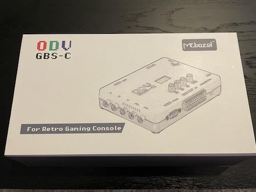
It features:
ODV stands for Original Draw Video and it's the branding used by the chinese manufacturer Mcbazel, that made an end-user product from the open source project. But of course, you can build your own if you want to. They also make a composite adapter with the name ODV-II composite, in the same orange case design, which can be used to add the missing composite input option to the GBS-C (or any other upscaler for that matter).
Let's see what's in the box and set it up:
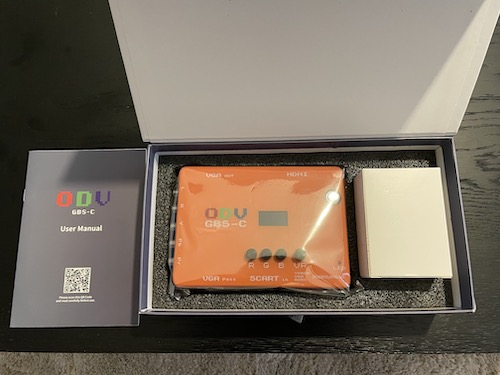
The unit itself looks well built, the plastic is decent quality and they even added rubber feet to both the ODV-GBS-C and the ODV-II composite adapter.
There is a VGA pass connector and a SCART connector in the front of the unit, with a 3 state selector switch that lets you choose the type of the input coming from the SCART connector, between YPBPR/VGA/RGBS, RGBS or RGsB. On the left side the component video and audio input RCA jacks, on the right side the DC power and micro-USB power connectors can be found. The back side of the unit features a VGA out and a HDMI out port, along with a 3.5mm audio out jack. The GBS-C requires more power than what my Samsung TV provides, so it has to be powered either by it's own power supply or a USB power supply.
The setup is very straightforward, just plug in the power, connect the TV to the HDMI port and your equipment to any of the inputs. Then turn the unit on. The ODV-GBS-C auto detects the input. It has an LCD screen and some control nobs you can play around with. You can fine tune the color saturation with the RGB nobs and move around the menu and select (press) with the fourth nob.
ODV-GBS-C disassembled (Image by MSX.org):
The menu is simple. It allows you to select an output resolution, load a predefined preset, do a factory reset/restart and view the current output settings. The more advanced settings are in the web UI.
The GBS-C provides a WIFI hotspot where it's configuration interface can be reached. It appears as gbscontrol in your network list. The default password is “qqqqqqqq”. Once you're connected, open a browser and a navigate to 192.168.4.1
Here you can create, modify and delete presets, align and scale the image to fit (if needed), enable scanline emulation and fine tune some more advanced stuff. The UI provides a good explanation of all options if you click on the question mark.
The scanline emulation allows for different strengths of scanlines and some other fine tuning like subtle sharpening of lines. I kept coming back to the lightest scanline option, as for me it made the low res images much more pleasant to view on the huge screen. The scanline emulation works with 240p inputs only and is automatically turned off for the more modern, higher resolution inputs.
The only setting I changed (turned on, it's off by default) in the advanced panel was the FrameTime Lock. It keeps the input and output timings aligned, fixing the horizontal tear line (raster line) that can sometimes appear.
My first impression is that the image looks great. I tested it with a Sega Mega Drive 1 (HD retrovision SCART cable), a Nintendo GameCube (AV output with a HD retrovision SCART CSYNC cable), an Amiga 500 with an RGB-SCART cable, a Nintendo Wii with a component cable, and a Commodore 64 using the ODV-II composite-to-component adapter, connecting the C64 with a composite cable. In most cases upscaling to 1080p or 1280/960 gave the best result and what my Samsung TV could handle.
I've been running it for about an hour during my test, the unit got warm, but not really hot. The image is sharp and clear, the colors seem correct, the scrolling is smooth, there is no raster line after turning on the FrameTime lock and I couldn't notice any input lag. The only issue I discovered was with the Wii, where with the interlaced resolutions the screen sometimes went black for a second. It doesn't happen in 480p though. I probably I need to play around with the settings to solve that. Overall, I'm very satisfied with the purchase so far.
Here are some screenshots with the various inputs, with scanline emulation enabled and disabled:
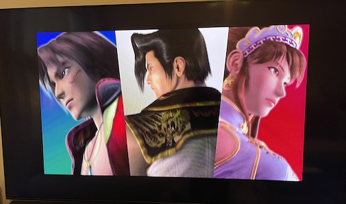
SoulCalibur running on
a GameCube, using the AV output with a HD Retrovision SCART cable, upscaled to 1080p.
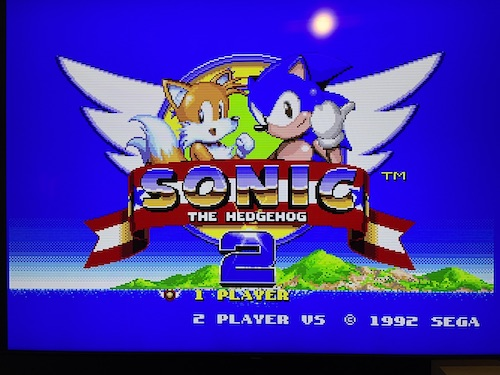
Sonic 2 running on a
MegaDrive 1, using a HD Retrovision SCART cable, upscaled to 1080p, scanline emulation (level1).
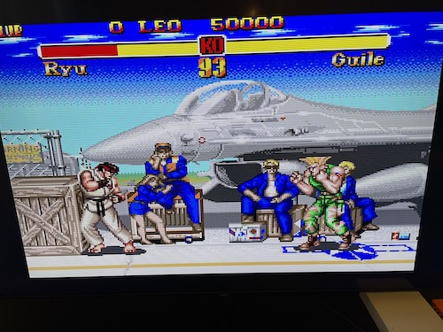
Super Street Fighter
II running on a MegaDrive 1, using a HD Retrovision SCART cable, upscaled to 1080p, scanline emulation
(level1).
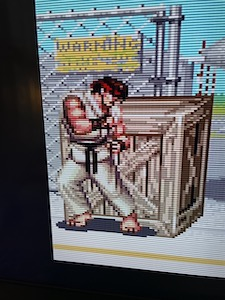
Closeup of Ryu, with
scanlines.
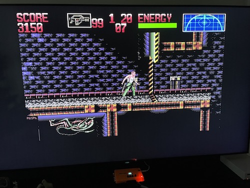
Alien 3 running on an
Amiga 500, using an RGB-SCART cable, upscaled to 1080p, scanline emulation off.
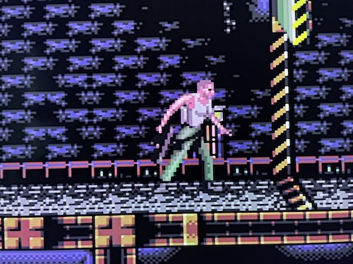
Closeup of Alien 3,
scanline emulation off.
This small adapter lets you connect composite sources to the scan converter. It's USB 5V powered and can run from your TV's powered USB port, if it has one. It runs just fine from my Samsung TV's USB port which provides 1A. There are 3 buttons, a Power On/OFF switch, an Input selection and a Fuction selection button. The input selection switches between the Y/PB/PR, CVBS and S-Video inputs, while the Funtion selection toggles between smoothing/video-fiter options, which I found quite useless.
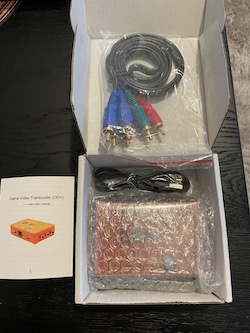
I tested the adapter with a Commodore 64, with a regular composite cable. The CVBS RCA jack went into the ODV-II, the L/R audio jacks into the ODV-GBS-C. I was pleased with the result. The image was good enough for enjoying some games and the text was readable. For a better image quality I will buy an S-Video cable for the C64 eventually.
One thing that could have been improved in the design that the order of the component out RCA jacks on the ODV-II and the component input RCA jacks on the GBS-C could have been mirrored, so they could be connected via a male-male RCA plug instead of a cable, "tying" the two units together to reduce some cabling clutter.
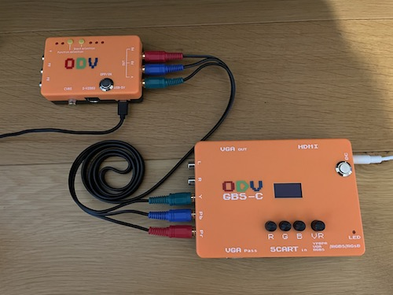
ODV-II disassembled (Image by Nightfall Crew):
Screenshots using a Commodore 64 with ODV-II + ODV-GBS-C:
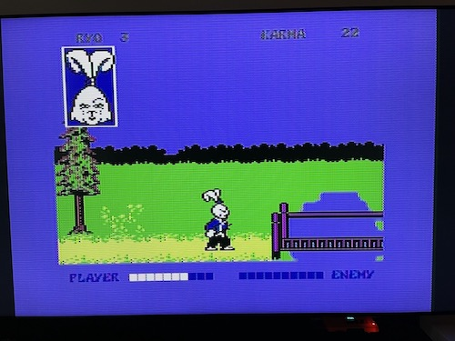
Usagi Yojimbo
(Samurai Warrior) running on a C64, using a composite cable, scanline emulation (level1).
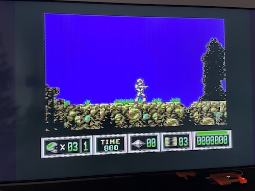
Turrican 2 running
on a C64, using a composite cable, upscaled to 1080p, scanline emulation off.


{kind=link}
{kind=link}
{kind=link}
{kind=link}
{kind=link}
{kind=link}
{kind=link}
{kind=link}
{kind=link}
{kind=link}
{kind=link}
{kind=link}
{kind=link}
{kind=link}
{kind=link}